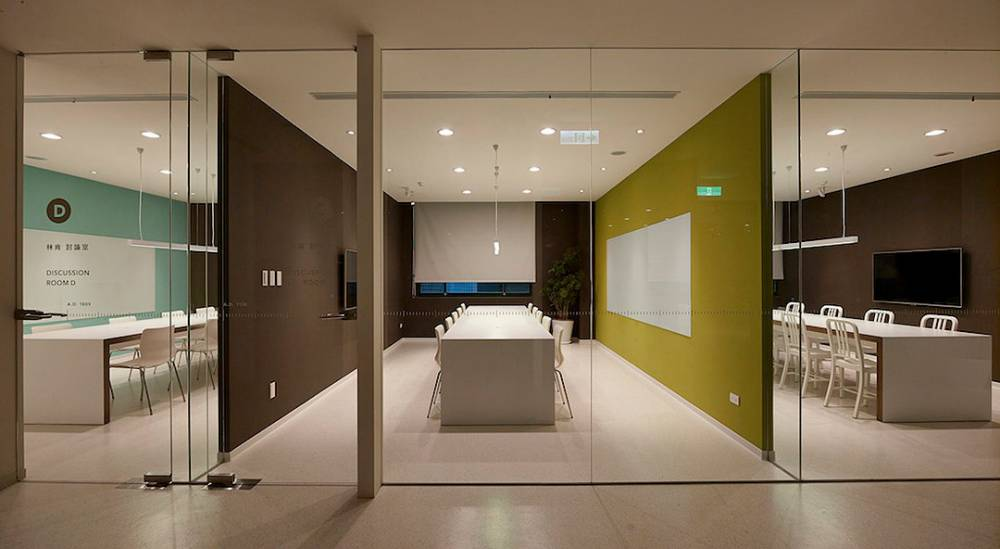
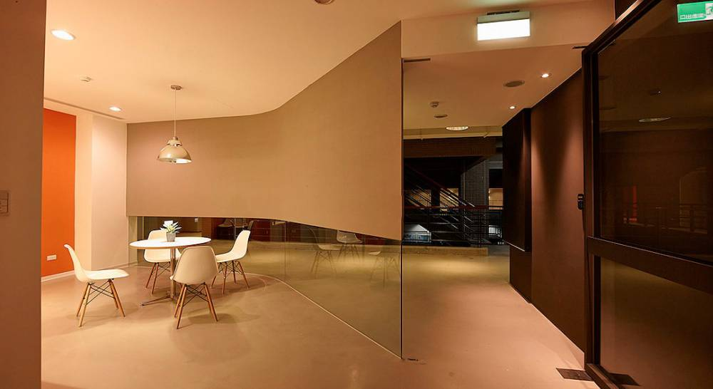
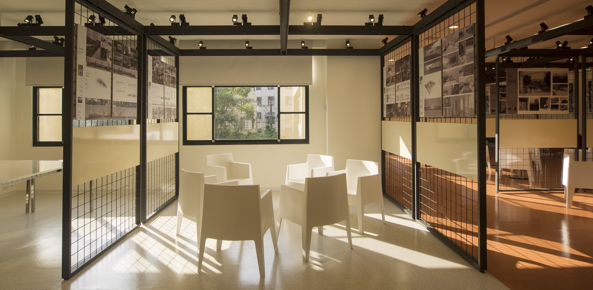
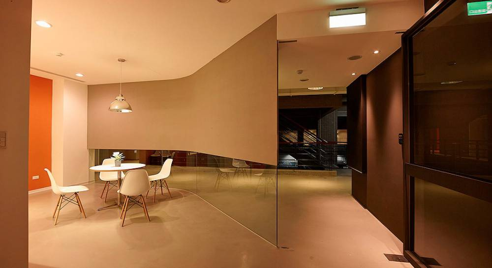
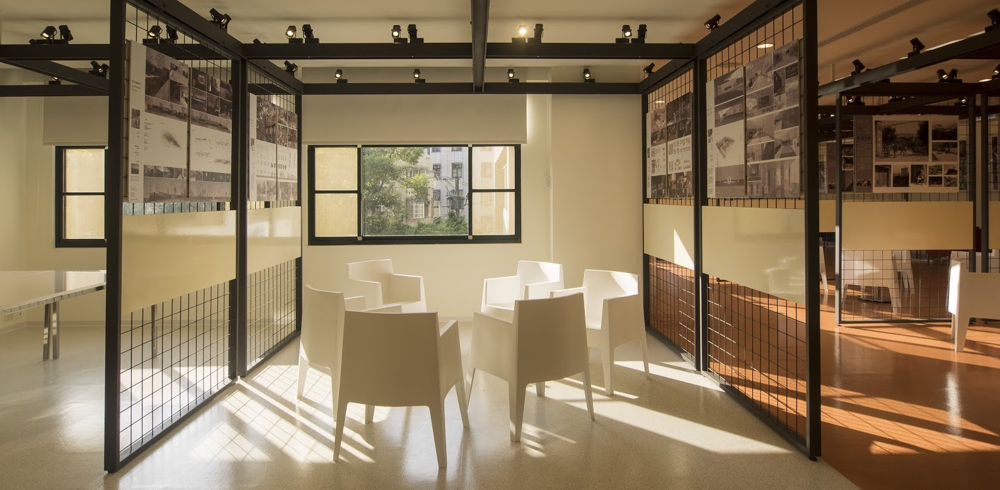
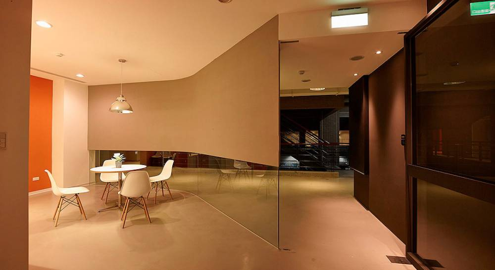
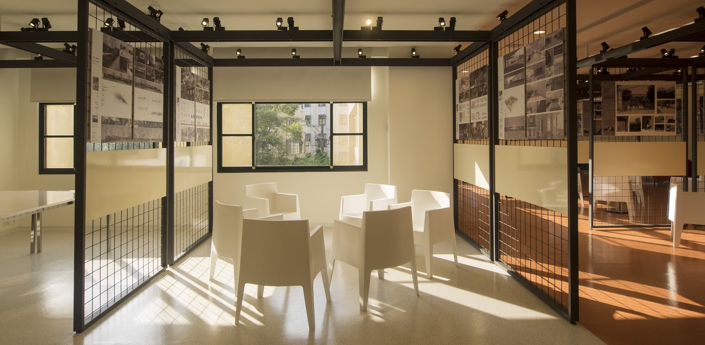
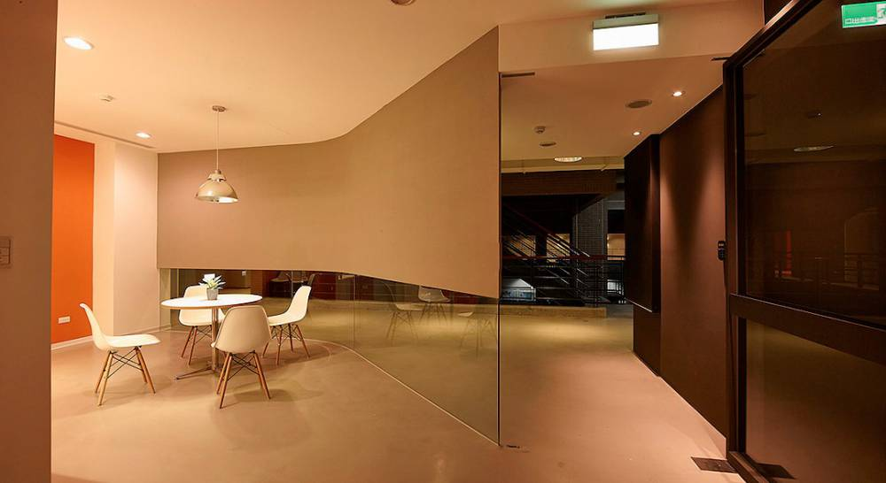
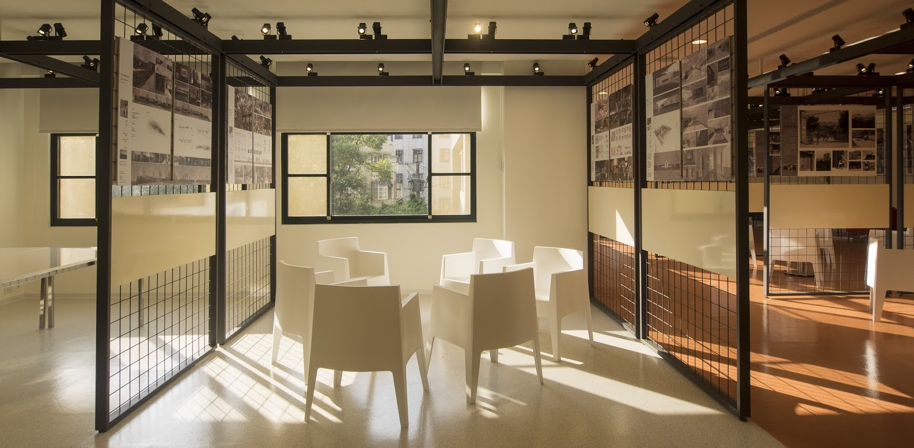

 





樂學園
-完美的學習天地-


-完美的學習天地-
本校為促進學生學習成效追求教學卓越之發展目標，營造幸福有感與樂學的氛圍，特以「樂學園」為名， 打造多功能學生學習發展基地。透過自主學習、團體討論、藝文欣賞、學習輔導、以及學用合一的諮詢協助，促使學生勤於樂於學習，引領學生學涯發展與培養潛力，落實培育兼具品格、專業、創意、世界觀的新世代人才。
昨夜江邊春水生，艨艟巨艦一毛輕。向來枉費推移力，此日中流自在行。＜朱熹—觀書有感＞ 一
半畝方塘一鑑開，天光雲影共徘徊。問渠那得清如許，未有源頭活水來。＜朱熹—觀書有感＞ 二
風雅頌出自中國最古老的詩歌總輯《詩經》，其樂曲已失傳，只留歌詞，分風、雅、頌三類型，而賦、比、興為詩歌的表現手法，與風雅
頌合稱詩的六義。
人之進學在於思，思則能知是與非。但得用心才熟後，自然後處有思隨。＜朱熹—九思＞
勝日尋芳泗水濱，無邊光景一時新。等閒識得東風面，萬紫千紅總是春。＜朱熹—春日＞
“
”